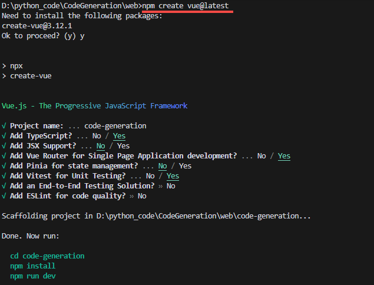
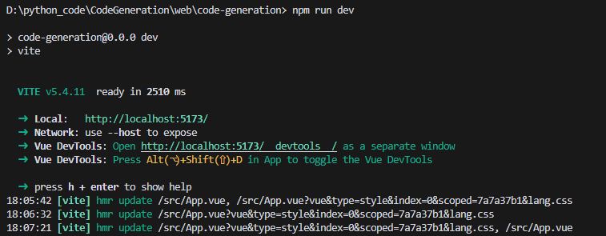
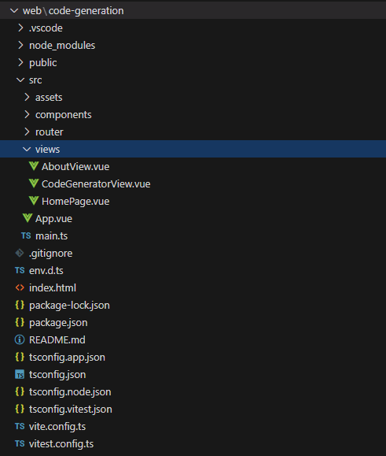

环境搭建
1
2
3
| 1. 安装Nodejs
2. 安装vue:
npm install -g @vue/cli
|
创建项目
创建前端脚手架

运行项目

前端项目框架说明

main.ts
1
2
3
4
5
6
7
8
9
10
11
12
13
14
15
16
17
|
import './assets/main.css'
import { createApp } from 'vue'
import App from './App.vue'
import router from './router'
createApp(App)
.use(router)
.mount('#app')
|
router/index.ts
1
2
3
4
5
6
7
8
9
10
11
12
13
14
15
16
17
18
19
20
21
22
23
24
25
26
27
28
29
30
31
32
33
|
import { createRouter, createWebHistory } from 'vue-router'
import HomePage from '../views/HomePage.vue'
import CodeGeneratorView from '../views/CodeGeneratorView.vue'
const router = createRouter({
history: createWebHistory(import.meta.env.BASE_URL),
routes: [
{
path: '/',
name: 'home',
component: HomePage,
},
{
path: '/code-generator',
name: 'code-generator',
component: CodeGeneratorView,
},
],
})
export default router
|
App.vue
1
2
3
4
5
6
7
8
9
10
11
12
13
14
15
16
17
18
| <template>
<div id="app">
<router-view></router-view>
</div>
</template>
<script>
export default {
name: 'App',
}
</script>
<style scoped>
/* 样式 */
</style>
|
views/HomePage.vue
1
2
3
4
5
6
7
8
9
10
11
12
13
14
15
16
17
18
19
20
21
22
23
24
25
26
27
28
29
30
31
32
33
34
35
36
37
38
39
40
41
42
43
44
45
46
47
48
49
50
51
52
53
54
55
56
57
58
59
60
61
62
63
64
65
66
67
68
69
70
71
72
73
74
75
76
77
78
79
80
81
82
83
84
85
86
87
88
89
90
91
92
93
94
95
96
97
98
99
100
101
102
103
104
| <template>
<div class="home-page">
<h1>工具选择</h1>
<div class="button-grid">
<router-link to="/code-generator" class="tool-button">代码生成工具</router-link>
<router-link to="/code-generator" class="tool-button">代码生成工具</router-link>
<router-link to="/code-generator" class="tool-button">代码生成工具</router-link>
<router-link to="/code-generator" class="tool-button">代码生成工具</router-link>
<router-link to="/code-generator" class="tool-button">代码生成工具</router-link>
<router-link to="/code-generator" class="tool-button">代码生成工具</router-link>
<router-link to="/code-generator" class="tool-button">代码生成工具</router-link>
<router-link to="/code-generator" class="tool-button">代码生成工具</router-link>
<router-link to="/code-generator" class="tool-button">代码生成工具</router-link>
<router-link to="/code-generator" class="tool-button">代码生成工具</router-link>
</div>
</div>
</template>
<script>
export default {
name: 'HomePage',
}
</script>
<style scoped>
.home-page {
text-align: center;
padding: 20px;
background-color: #f9f9f9;
font-family: 'Arial', sans-serif;
}
.button-grid {
display: flex;
flex-wrap: wrap;
gap: 20px;
justify-content: flex-start;
}
.tool-button {
display: inline-block;
padding: 20px 30px;
background-color: #4CAF50;
color: white;
text-decoration: none;
border-radius: 8px;
box-shadow: 0 4px 6px rgba(0, 0, 0, 0.1);
transition: background-color 0.3s, transform 0.2s, box-shadow 0.2s;
flex: 1 1 calc(20% - 20px);
box-sizing: border-box;
}
.tool-button:hover {
background-color: #45a049;
transform: translateY(-2px);
box-shadow: 0 6px 8px rgba(0, 0, 0, 0.15);
}
</style>
|
正式项目开发
从views目录下添加新的vue，通过（index.ts）配置路由访问新的vue界面